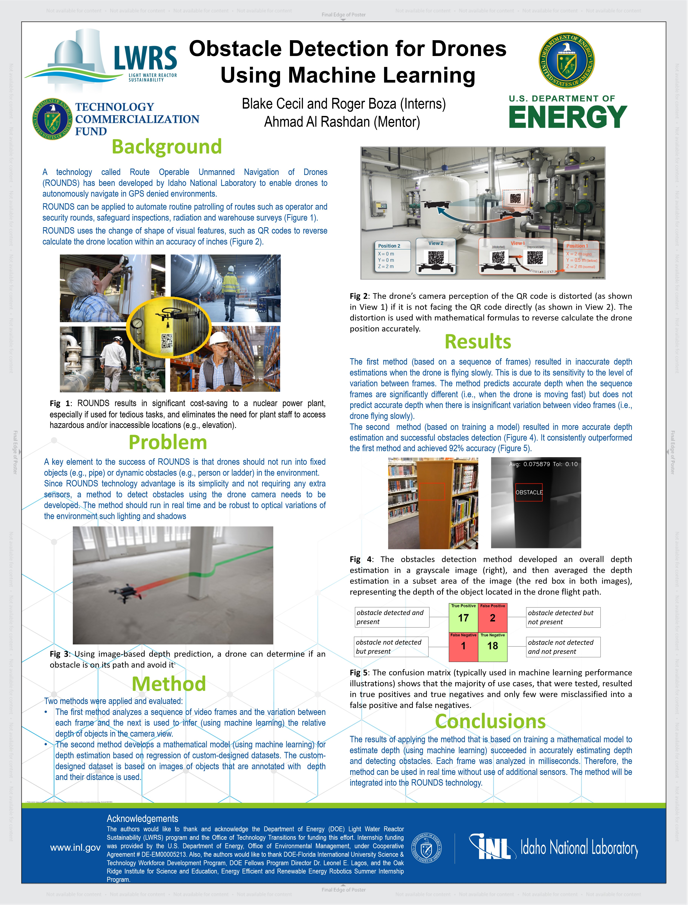

Idaho National Laboratories Autonomous Drone Research
Remote Operable Unmanned Naviogation of Drones (ROUNDS)
Idaho National Laboratories (INL) is researching and developing a system that allows drones to
navigate autonomously in GPS denied environments. The drones find their way through complex
environments by using QR to navigate, as demonstrated in the video below.
Obstacle Detection
A critical aspect of any truly autonomous navigation system is the ability to navigate dynamic
and complex environments, to this end an obstacle detection system is crucial for the drones
success. My task was to research the state of the art approaches to obstacle detection,
identify a suitable approach, and use it to implement a obstacle detection API.
Results
After surverying obstacle detection literature I identified a machine learning method know as
depth estimation as the best approach given our constraints and environment. I collected a
small dataset of videos in various environments and different obstacles and validated the
selected models on them. The approach was highly succesful with 92% accuracy. More details
can be seen in the poster, which won the INL summer intern poster session.

Conclusions
Our work on obstacle detection will be integrated into the ROUNDS system which will in turn be
used to automate tedious tasks such a inspections and security patrols, saving time, money,
and increasing plant efficiency. I gained some valuable skills during my internship, I learned
how to read and evaluate incredibly technical machine learning papers, and also got hands on
experience modifying and applying state of the art models to novel real world tasks.